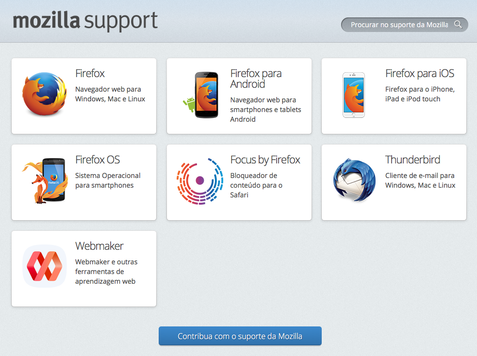
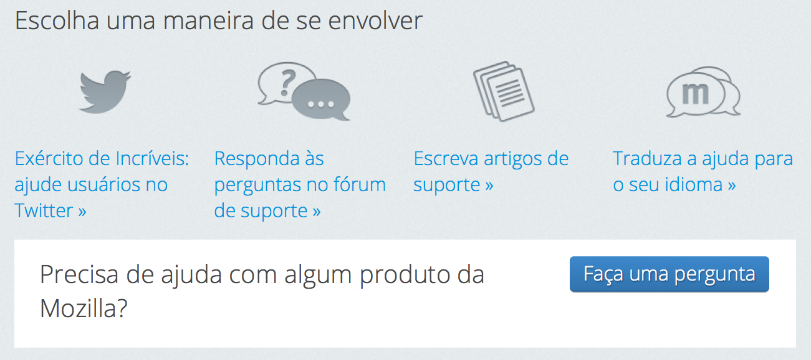
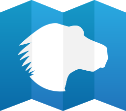
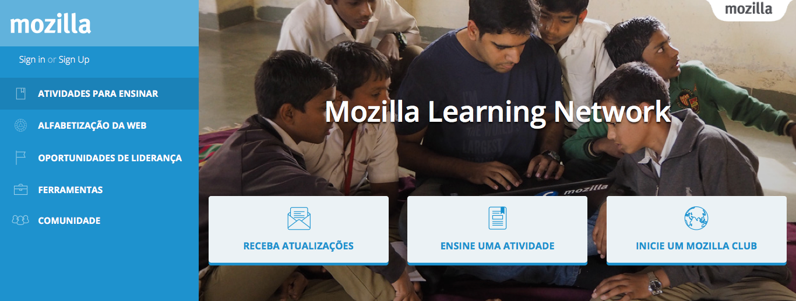
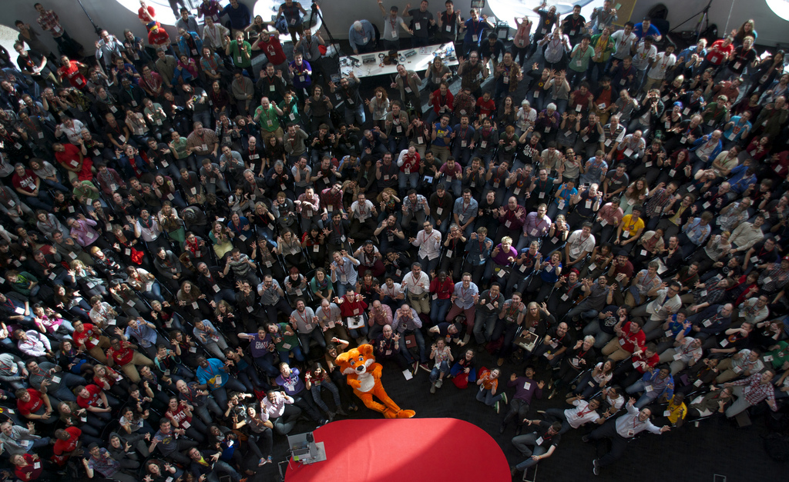
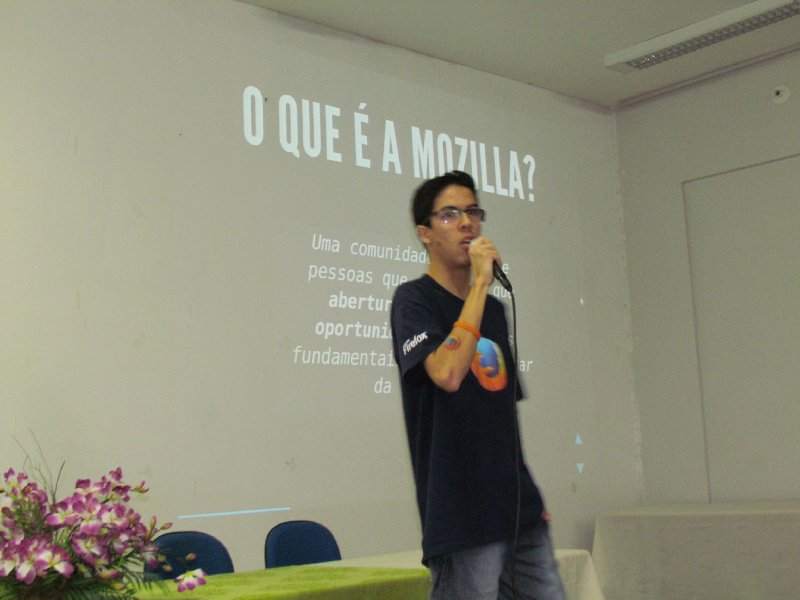
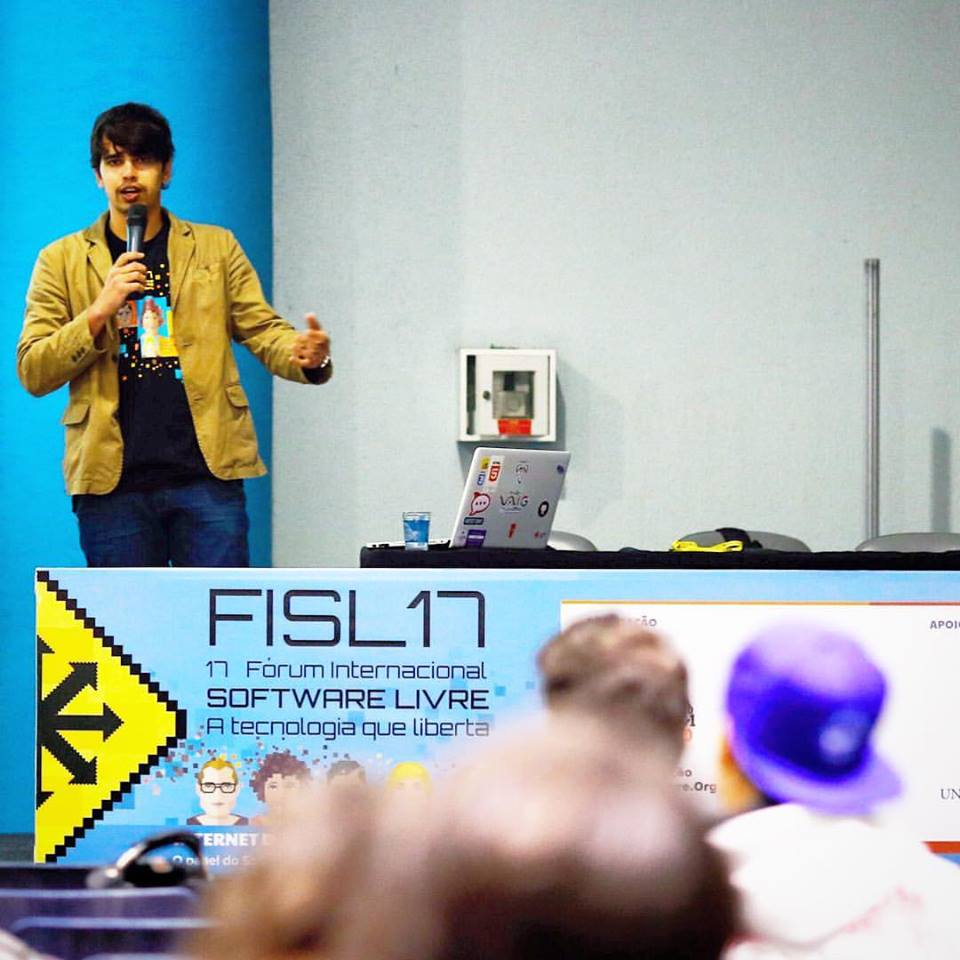
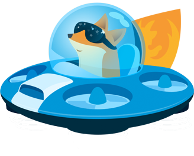

How to contribute with Mozilla
Ways of contribute with Mozilla
- Doing something to help Mozilla projects
- Involving with the community
The best way is doing both :)
Why be in community?
- Shape our identity
- Share acknowledgement
- Help and get helped
- Learn team work
- Networking
What is Mozilla?
- Non-profit organization
- Internet as a global resource: open and accessible
- People first (shaping the internet)
- Security and Privacy
- FLOSS
- Transparency and Collaboration
What Mozilla Brazil does?
- Contributes with the Mozilla mission
-
Inspire and emancipate people
- to join and embrace the mission
- to collaborate with products and Open Source Projects
- Do what a community does:
- Join forces towards the goals
- Share content
- Facilitate the contribution (like sharing channels of colaboration)
How get in touch?
- Official: Discourse - https://discourse.mozilla-community.org/c/mozilla-brasil
-
Unofficial:
- Mozilla Brasil - https://telegram.me/mozillabr
- SUMO - https://telegram.me/SumoBrasil
- WoMoz - https://telegram.me/WoMozBrasil
- Infra - https://telegram.me/mozinfra
- MDN Brasil - https://telegram.me/MDNBrasil
- Connected Devices - Doesn't have a beautiful URL
- MDN Brasil - https://telegram.me/foxfooding
- For more take a look at the discussions on discourse.
Social?
Who we Are?
"We are programmers, lawyers, scientists, designers, students... We are common people who fight to guarantee your freedom and right of expression."

The Mozilla Manifesto
https://www.mozilla.org/en-US/about/manifesto/
Main Mozilla Projects
https://support.mozilla.org/
Help people with their doubts about Mozilla services and products
SUMO - SUpport MOzilla
https://support.mozilla.org/
SUMO - SUpport MOzilla
https://support.mozilla.org/
Mozilla Developer Network
https://developer.mozilla.org/
Mozilla Learning Network
https://teach.mozilla.org/
Firefox Student Ambassadors

https://wiki.mozilla.org/Brasil/Firefox_Student_Ambassadors
Firefox Student Ambassadors
- Promote Firefox (Desktop, Android and iOS)
- Launching community products and projects
- Teach people about the Mozilla mission
- Teach the Web
- Help the World be a better place
RUST

https://www.rust-lang.org/
http://rustontherocks.org/
Mozilla Quality Assurance
https://quality.mozilla.org/
WoMoz
https://womoz.mozillabrasil.org.br/

A free and non-profit project created and maintained by volunteers who aim the female empowerment in the Tech area.
Empowering is incentivize the participation, collaborative learning and above all, give voice to women.
Connect Devices
(Dispositivos Conectados)
Localization
https://wiki.mozilla.org/Brasil/L10n
l10n category on Discourse
Event organizing
Getting Started - Event Organizing (pt_BR)
Giving talks
 Reporting bugs
Onboarding
Engaging new members
Mozillian
Lists all core individuals and groups that participate in the Mozilla Project. We call ourselves Mozillians and this is where we connect and share with one another.